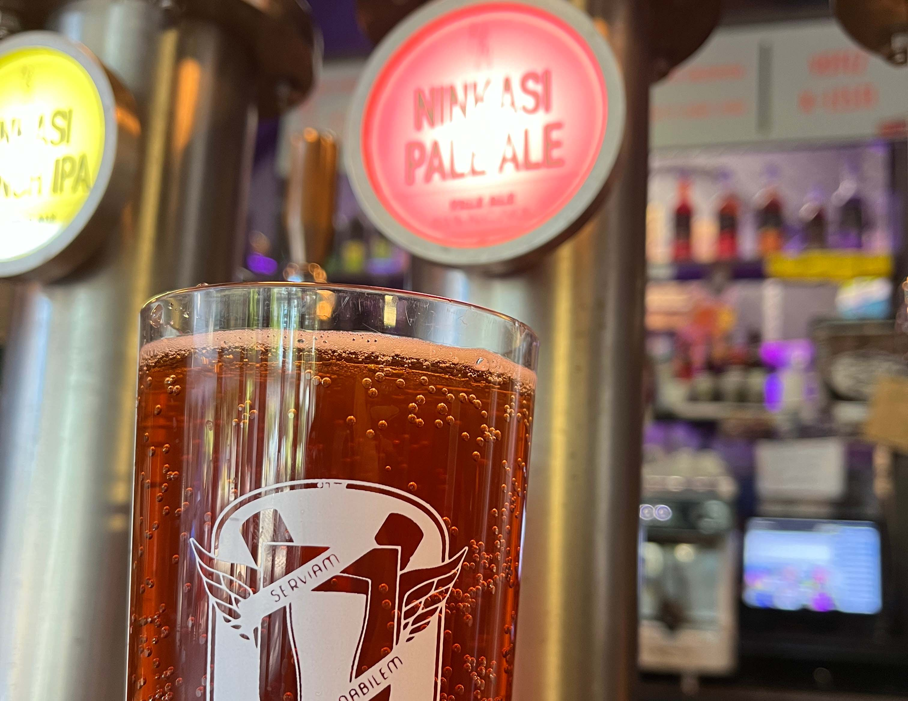
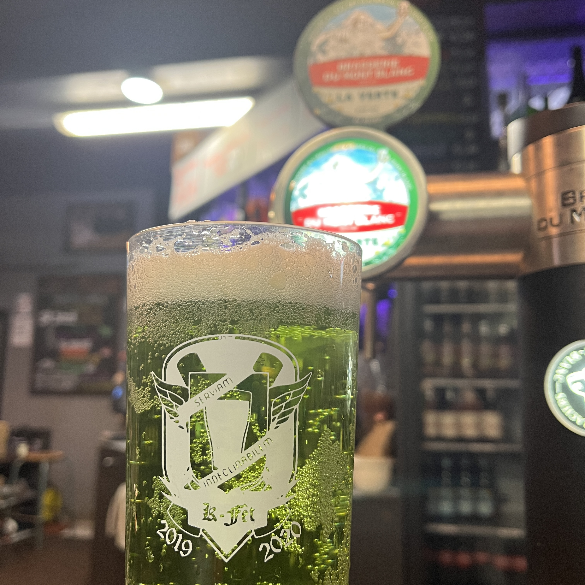

St. Stephanus Blonde
7°
3,5€
Bière d’abbaye blonde de style belge. Trois levures différentes sont utilisées pourson brassage dont la Jerumanus, souche d’origine de l’abbaye où la bière est brassée.
St. Stephanus Brune
8°
3,5€
Bière d’abbaye belge au goût légèrement fumé presque brioché. Nuances de noisettes et caramel avec une pointe de chocolat noir sont de mise pour cette bière vous accompagner dans vos soirées les plus folles.
Cidre Appie
5°
3,5€

Produit et mis en fût dans le Val d’Oise, ce cidre au bon goût de pomme et au côté légèrement acidulé saura vous rafraîchir et vous faire voyager directement dans les champs de Normandie et de Bretagne.
Meantime Lager
3,5€
4,5°
Une Lager est une blonde franche et épurée dans le style «bière de soif», avec un Malt Est Anglian et du houblon Kentish.
Ninkasi Blanche
4,8°
3,5€
Drapée de son voile de levure, subtilement parfumée d’épices, douce comme les blés qui habillent son corps léger et relevée d’une fine amertume, cette bière blanche élégante saura vous séduire par sa fraîcheur et son originalité.
Ninkasi Triple
8,4°
3,5€
C'est une bière de spécialité belge. Avec son corps soyeux et malté survient la force de son titrage en alcool qui réchauffe instantanément la bouche. Enfin une légère amertume persistante réveillera vos papilles. C’est une bière de dégustation à boire avec modération.
Ninkasi Pale Ale
4,5°
3,5€

Bière emblématique de Ninkasi qui a reçu à moultes reprises des récompenses, elle vous étonnera en bouche par son amertume, son caractère fruité et ses notes de caramel.
Ninkasi French IPA
5,4°
3,5€
Les houblons Mistral et Aramis d’Alsace s’ajoutent à des malts Cara, Munich et Pilsen de France pour créer une bière cuivrée au corps malté qu’est la IPA! C’est une attaque en bouche fruitée (agrumes et fruits blancs) et des notes épicées et herbacées, 100% française !
Grolsch Weizen
5°
3,5€

Bière blanche de style Hefeweizen, couleur orangée trouble, onctueuse mousse blanche, bouquet de banane et de girofle avec un final légèrement acidulé.
Guinness
4,2°
3,5€

Bière irlandaise emblématique, par sa robe noire et son côté riche et crémeux. Avec ses arômes de café et sa mousse onctueuse, l’équilibre entre douceur et amertume est tout simplement parfait.
Mont Blanc Bleue
5,8°
3,5€
Fine et légère en bouche, la Bleue associe la puissance aromatique du fruit rouge avec la myrtille, tout en conservant l’amertume d’une boisson alcoolisée fermentée.
Mont Blanc Verte
5,9°
3,5€

La Verte c’est l’impossible mariage de 2 notes très amères et un résultat à l’équilibre parfait entre alcool, acide, sucre et puissance aromatique du génépi. Fine et légère en bouche.